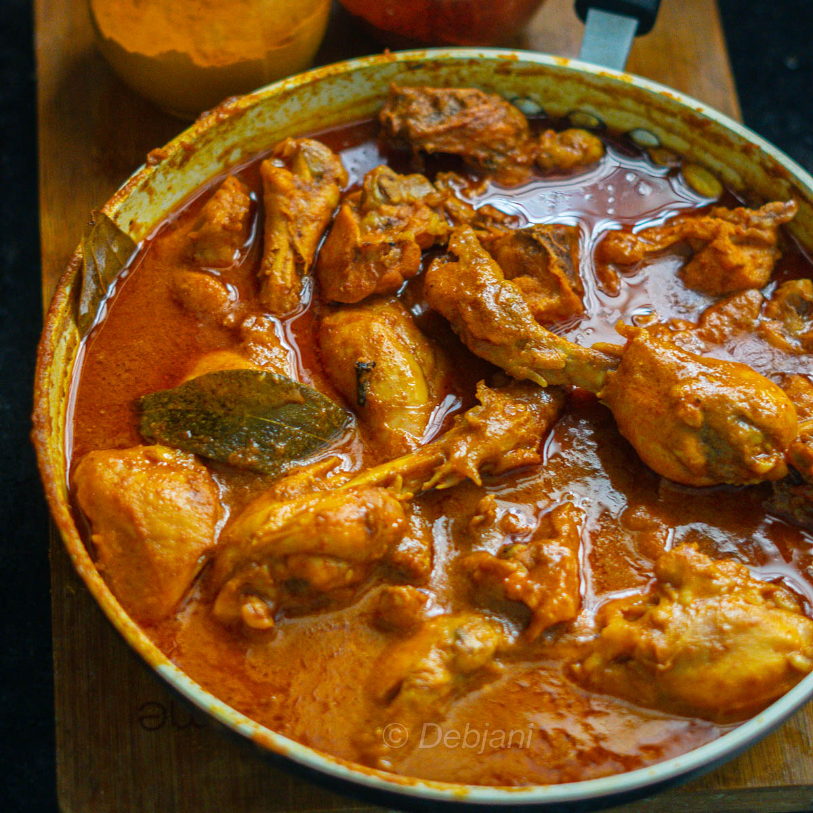

Description
Chicken curry from the Indian subcontinent typically features chicken stewed in a tomato-based sauce seasoned with aromatic spices.
This recipe, like many others, calls for curry powder (a spice blend made with coriander, turmeric, cumin, and chili powder).
- Prep Time: 20 mins
- Cook Time: 25 mins
- Total Time: 45 mins
- Servings: 4
Ingredients
- 3 tablespoons olive oil
- 1 small onion, chopped
- 2 cloves garlic, minced
- 3 tablesoons curry powder
- 1 teaspoon ground cinammon
- 1 teaspoon paprika
- 1 bay leaf
- 1/2 teaspoon grated fresh ginger root
- 1/2 teaspoon white sugar
- salt to taste
- 2 skinless. boneless chicken breast halves-cut into bite size pieces
- 1 tablespoon tomato paste
- 1 cup plain yogurt
- 3/4 cup coconut milk
- 1/2 lemon, juiced
- 1/2 teaspoon cayenne pepper
Directions
- Heat olive oil in a skillet over medium heat. Sauté onion until lightly browned.
- Stir in garlic, curry powder, cinnamon, paprika, bay leaf, ginger, sugar, and salt. Continue stirring for 2 minutes.
- Add chicken pieces, tomato paste, yogurt, and coconut milk. Bring to a boil, reduce heat, and simmer for 20 to 25 minutes.
- Remove bay leaf, and stir in lemon juice and cayenne pepper. Simmer 5 more minutes
- Serve hot and enjoy with rice